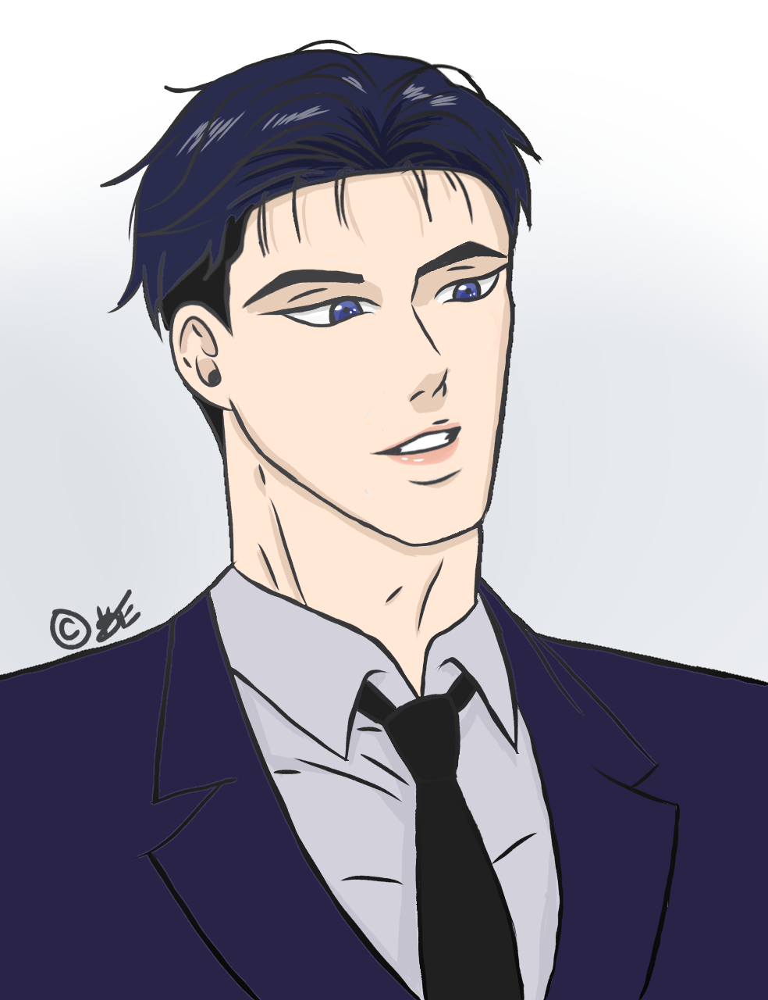

Kimberly Estrada's Homepage

About Me
My name is Kimberly Estrada. I am a third year majoring in Art and Design for Games and Playable Media. Some of my hobbies include drawing, playing video games, crocheting, and reading manga. I enrolled in ART101 for the MF GE requirement, but I also wanted to give coding a second chance. I am the second youngest in my family and a first generation college student. Before coming to UCSC I was anxious about fitting in to the point where I experience imposter syndrome, but I was able to settle in just fine during my first year because of all the people I was able to meet in class. I ended up feeling really good about attending UCSC to the point where I enjoy coming back to Santa Cruz. My dream is to work in either the gaming industry or to the animation industry, but I am still unsure. I am new to coding, but I wish to learn more about this subject because I believe that this will be something that I can enjoy later in the future. So, I intend to learn as much as I can and I know that I will learn something new every day which is something I am looking forward to.
Art Work
These are some of my most recent artworks.
